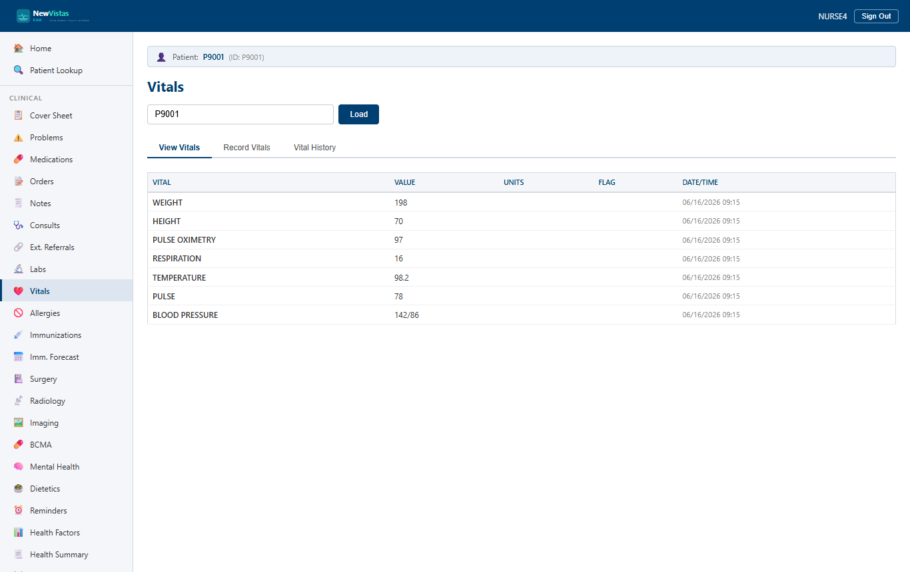

Vital Signs
Record up to eight vital types for a patient, see abnormal values flagged in red automatically, and search the vital history by date or type. This is the equivalent of the CPRS Vitals package.
Open the Vitals screen
- In the sidebar, under Nursing, click Vitals (or go to
/vitals). - In the Patient ID field, type the patient ID (e.g.
9). - Click Load. If no vitals exist yet, the View Vitals tab shows "No vitals recorded."

Record a set of vitals
- Click the Record Vitals tab.
- Fill in the header fields — Date/Time Taken (leave as now), Location (e.g.
Ward 3A), and Entered By (e.g.JOHNSON,MARY R). - Fill in the Vital Measurements grid — Temperature (F), Pulse (bpm), Respiration (breaths/min), Blood Pressure (mmHg, e.g.
120/78), Weight (lbs), Height (in), Pain (0–10), and Pulse Oximetry (%). - Click Record Vitals.
A green banner reads "Vitals recorded successfully" and the page switches to the View Vitals tab, which shows one row per vital type with its latest value and the date/time taken. A new recording replaces the latest reading for each type you entered; types you left blank keep their previous value.
Reading the abnormal flags
The View Vitals tab flags out-of-range values automatically. A flagged
value appears in red, bold text (the value.flagged
style). The same red = danger color scheme runs through labs and the cover
sheet, so an abnormal vital is recognizable at a glance.
- Blood Pressure
180/110— flagged (hypertension). - Temperature
104.2— flagged (high fever). - Pulse
118— flagged (tachycardia). - Respiration
26— flagged (tachypnea). - Pulse Oximetry
89— flagged (hypoxia).
| Vital | Normal range | Abnormal | Critical |
|---|---|---|---|
| Temperature | 97.0–99.5 F | 100.4 F (fever) | 104.2 F |
| Pulse | 60–100 bpm | 110 bpm (tachy) | 40 bpm (brady) |
| Respiration | 12–20 br/min | 24 br/min | 8 br/min |
| Blood Pressure | 90/60–140/90 | 180/110 (HTN) | 80/40 (shock) |
| Pain | 0 | 4–6 (moderate) | 7–10 (severe) |
| Pulse Oximetry | 95–100% | 92% (hypoxia) | 85% (critical) |
/pain-assessment to document it.
Search the vital history
- Click the Vital History tab.
- Set the From and To dates (e.g. the last 30 days), choose a Vital Type (
ALLor a single type such asBLOOD PRESSURE), and a Max Results limit. - Click Search.
The results table shows each entry's vital type, value, units, flag, and date/time, sorted newest first, with a result count above the table (e.g. "12 result(s)"). Filtering by a single vital type shows only that type's readings.